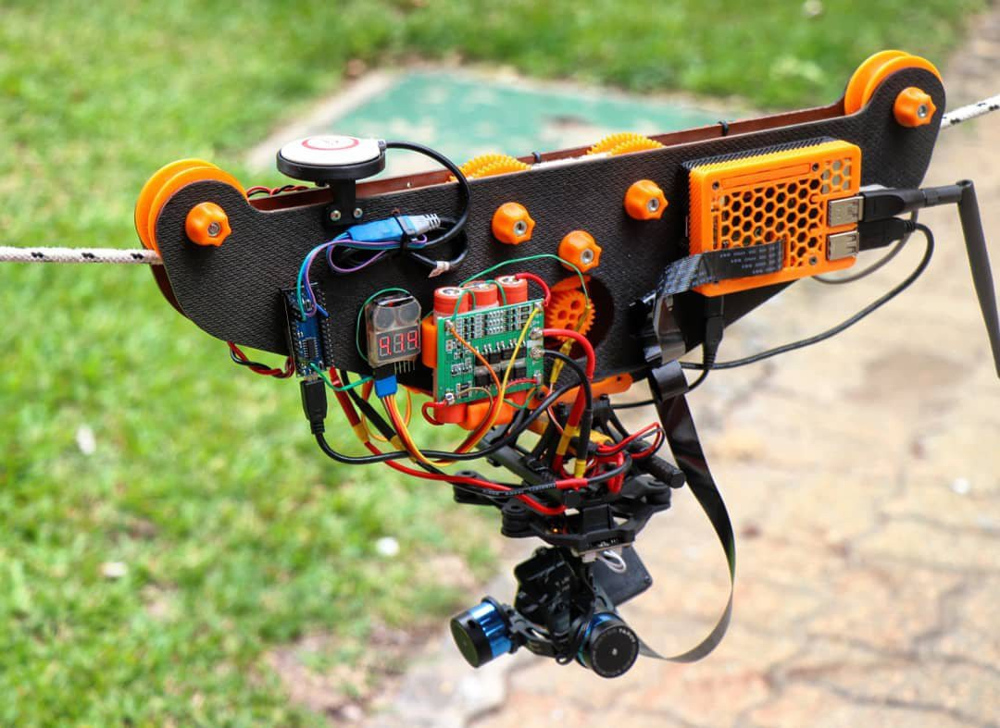

December, 2019
Cablecam
DIY cablecam with hobby components & tools.
mechatronics
brushless
esc
gimbal
arduino
gps
wireless
arduino
raspberry pi
jetson nano
computer vision
python
3d printing
Overview
The cablecam was born as a first approach to integrating many things; software, hardware design and a couple of fabrication techniques. I am amazed to see the interaction between programming and the real, physical world. This was a first attempt at creating a moving robot, with the simplification of movement along a single axis. The project was finished in late 2019.
I tried making this project mostly with what I had laying around.

For more details check this project out on Hackaday.io.
Articles
The cablecam was featured in a couple of websites:
Articles on DPReview and Hackster about the cablecam.
Article on Universidad de Montevideo's webpage about the cablecam.